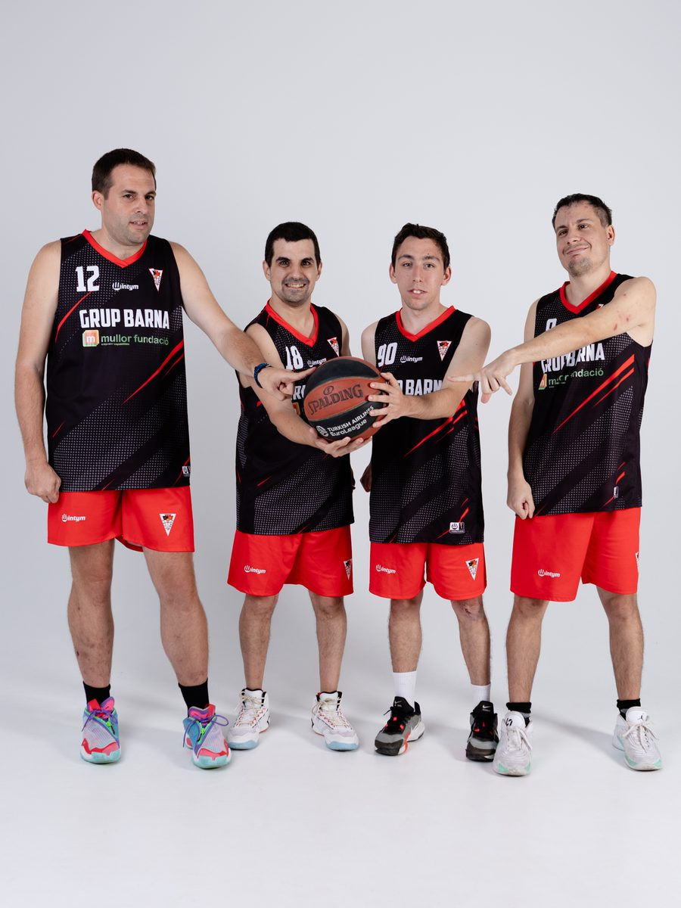
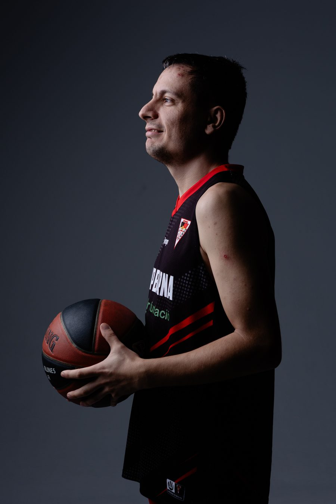
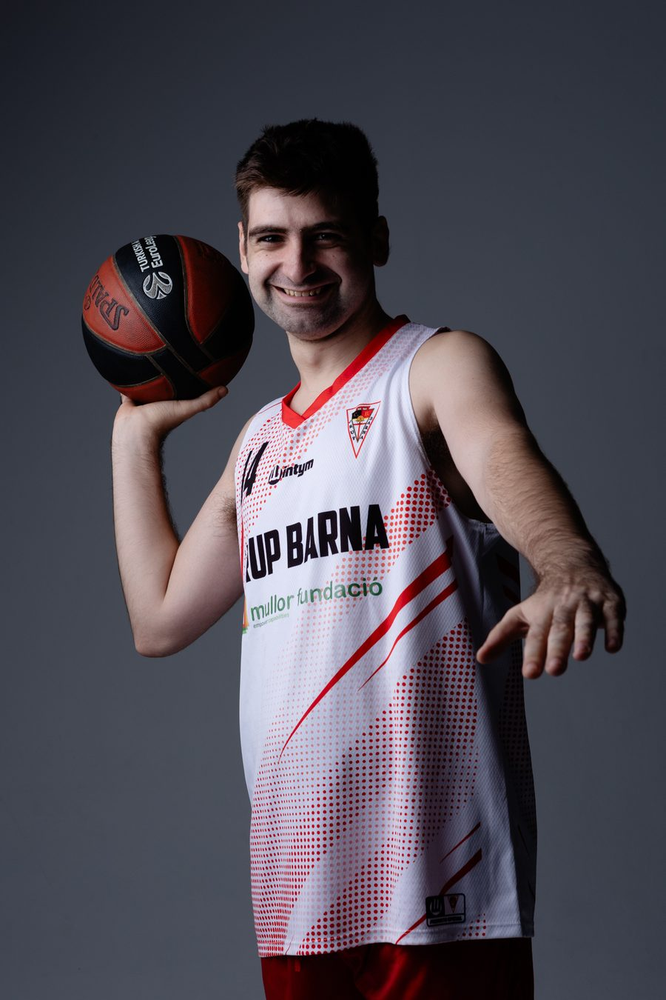
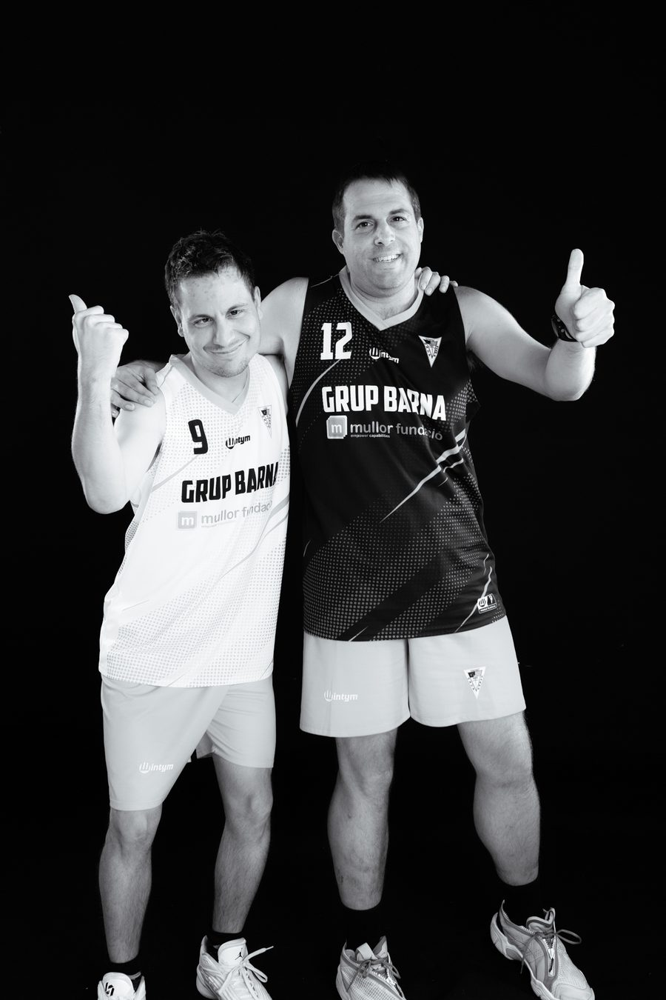
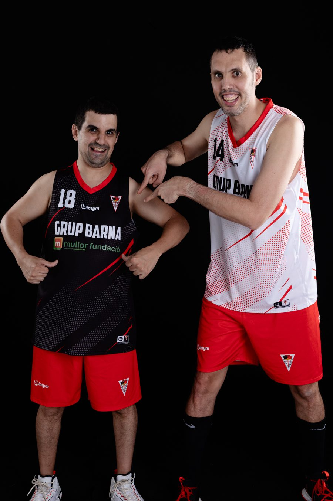
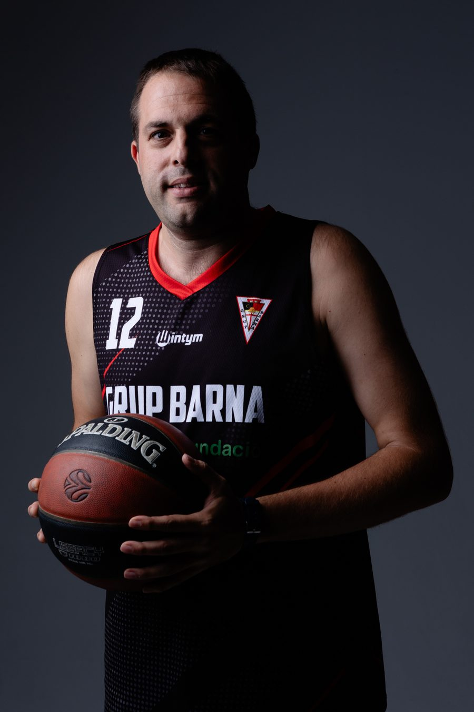
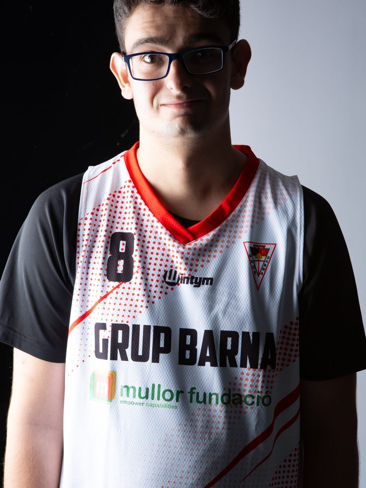

Bàsquet inclusiu · Lliga ACELL · El Clot
Barna Màgics
L'equip de bàsquet inclusiu del CB Grup Barna: jugadors i jugadores amb diversitat funcional entrenant i competint com qualsevol altre equip del club. No és un programa puntual ni una acció de responsabilitat social: és una secció més, amb calendari, staff tècnic i samarreta oficial, i un referent d'inclusió esportiva al barri.

Un equip més, no un programa
El Barna Màgics és l'equip de bàsquet per a persones amb diversitat funcional del CB Grup Barna. Entrena a la mateixa pista que la resta d'equips, comparteix pavelló i vestidors, competeix amb el seu propi calendari i apareix a la mateixa graella que el cadet o el sènior. El projecte es fa en col·laboració amb la Fundació Mullor i amb ACELL, la federació catalana d'esports per a persones amb discapacitat intel·lectual.
La distinció importa: no és una activitat paral·lela que el club organitza a més a més, és un equip dins l'estructura, en igualtat de condicions amb la resta d'equips del club. Per això el Barna s'ha convertit en referent d'inclusió al barri i, cada cop més, per a altres clubs de Catalunya: el concepte Màgics ha inspirat la categoria EQUALS del torneig 3x3 Westfield Glòries, on jugadors amb diversitat funcional comparteixen pista amb jugadors sense discapacitat.
La temporada, en resultats
Dues fites recents que expliquen com competeix l'equip, no només que hi participa.
Partit molt lluitat contra el Joventut que va permetre aconseguir el sotscampionat de la Lliga Catalana 25-26, superant les baixes importants per lesió dels darrers partits.
Veure el post →Gran actuació dels Màgics, tercers després de guanyar la final de consolació. A més, en Raimon Cera es va endur el concurs de triples del torneig. Un torneig ple d'esforç, companyonia i orgull Barna.
Veure el post →Barna Màgics, en imatges
Sessió de fotos oficial de l'equip 2025-26, amb l'equipació del club.






Aquestes són sis fotos triades. La sessió completa de l'equip — tots els jugadors i jugadores — és a la Galeria Fotogràfica del club.
Veure la galeria completa →Aliances institucionals
Una xarxa de col·laboració que fa possible que l'equip competeixi amb les mateixes garanties que qualsevol altre del club.
Fundació Mullor
Fundació especialitzada en l'acompanyament de persones amb diversitat funcional. Patrocinador i partner estratègic del Barna Màgics: el seu logo apareix a la samarreta oficial de l'equip.
ACELL
Federació catalana d'esports per a persones amb discapacitat intel·lectual. El Barna Màgics competeix regularment a la Lliga ACELL amb altres equips de Catalunya.
Com és un entrenament
S'assembla molt més al d'un altre equip del que la gent imagina: escalfament, treball tècnic, situacions de joc i partidet. Es treballa la mecànica de tir, la col·locació defensiva i les regles. El que canvia és el ritme de progressió i la manera d'explicar les coses, no l'exigència ni el respecte.
Quan un equip d'esport adaptat entrena al costat de l'infantil o del cadet, els nens i les nenes del club creixen veient-ho com el més normal del món, perquè per a ells ho és. No cal cap xerrada de sensibilització: n'hi ha prou amb compartir pavelló durant anys.
 EscoletaSi encara no ha començat i té entre 4 i 7 anys, el camí és aquest.
4 a 8 anys
CalendariEl calendari de tots els equips federats del club.
Temporada 26·27
EscoletaSi encara no ha començat i té entre 4 i 7 anys, el camí és aquest.
4 a 8 anys
CalendariEl calendari de tots els equips federats del club.
Temporada 26·27
 Campus de bàsquetSetmanes intensives de tecnificació al Clot cada estiu.
Cada estiu
Campus de bàsquetSetmanes intensives de tecnificació al Clot cada estiu.
Cada estiu
Qui hi pot participar
Persones amb diversitat funcional que vulguin jugar a bàsquet, amb independència del nivell previ. No cal experiència: hi ha qui arriba sense haver tocat mai una pilota. Com a la resta d'equips del club, el primer dia és de prova i sense compromís.
Si t'interessa per a algú de la família, escriu-nos i t'expliquem horaris i com funciona la fitxa: pel WhatsApp del club o deixant el contacte al formulari.
Preguntes freqüents
Què són els Barna Màgics?
L'equip de bàsquet inclusiu del CB Grup Barna: jugadors i jugadores amb diversitat funcional que entrenen i competeixen com qualsevol altre equip del club, dins la Lliga ACELL, en col·laboració amb la Fundació Mullor.
Cal experiència prèvia per jugar-hi?
No. Hi ha jugadors i jugadores que hi arriben sense haver jugat mai. Com a la resta d'equips del club, el primer dia és de prova i sense compromís.
On entrenen i competeixen els Màgics?
Entrenen a La Nau del Clot, la mateixa instal·lació que la resta d'equips del club, i competeixen dins del circuit d'ACELL per tot Catalunya.
Com es pot apuntar algú a l'equip?
Escrivint al WhatsApp del club (+34 698 425 153) o deixant el contacte al formulari de la web. El club explica horaris, com funciona la fitxa i concerta un primer entrenament de prova, sense compromís.
Hem explicat amb calma com funciona un equip de bàsquet inclusiu: com s'entrena, com es competeix i què canvia respecte de la resta d'equips.
Vull informació dels Barna Màgics
Deixa'ns el contacte i t'expliquem horaris, com funciona la fitxa i com concertar un primer entrenament de prova, sense compromís.